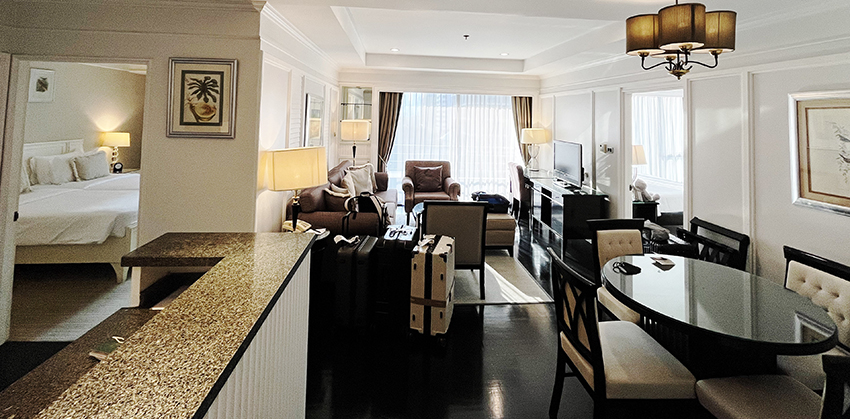
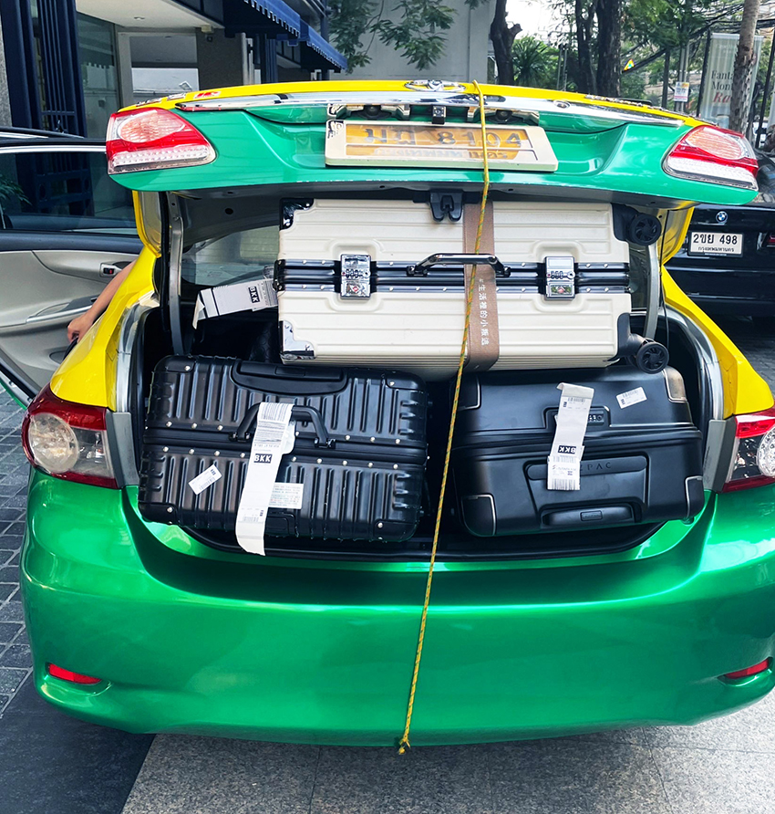
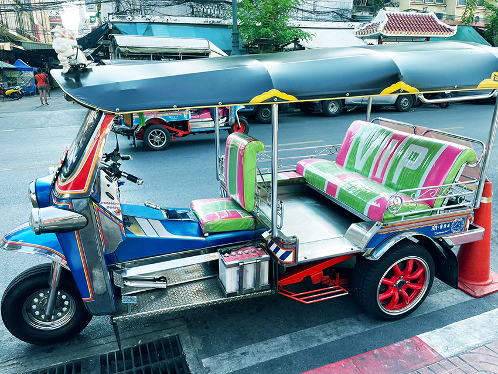
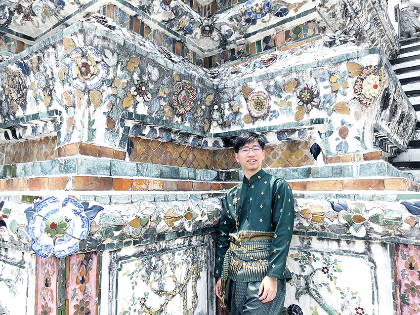
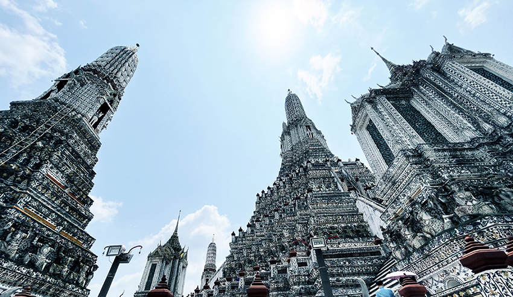
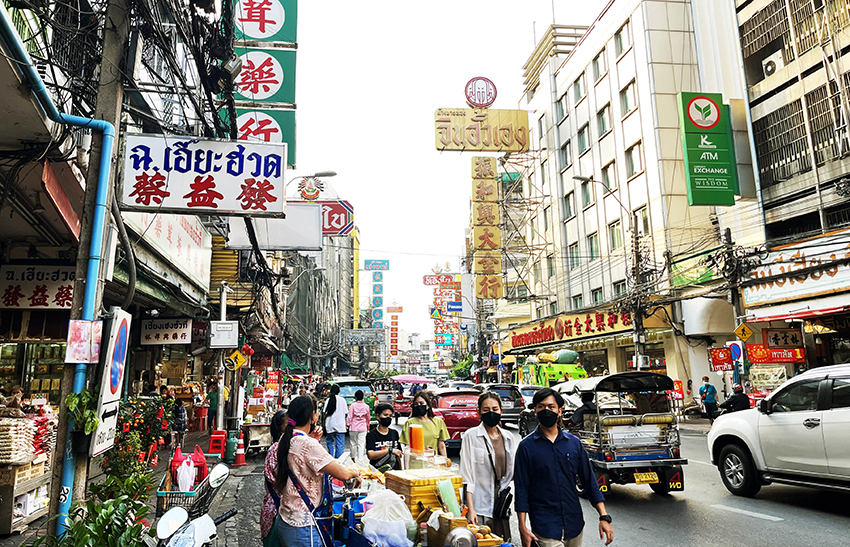
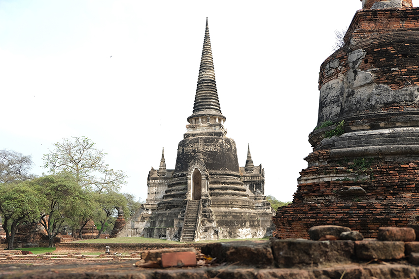
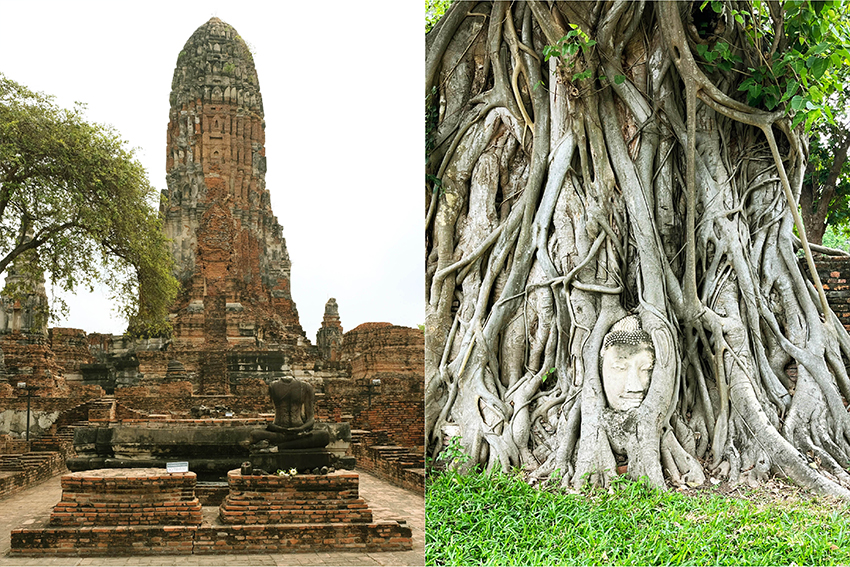
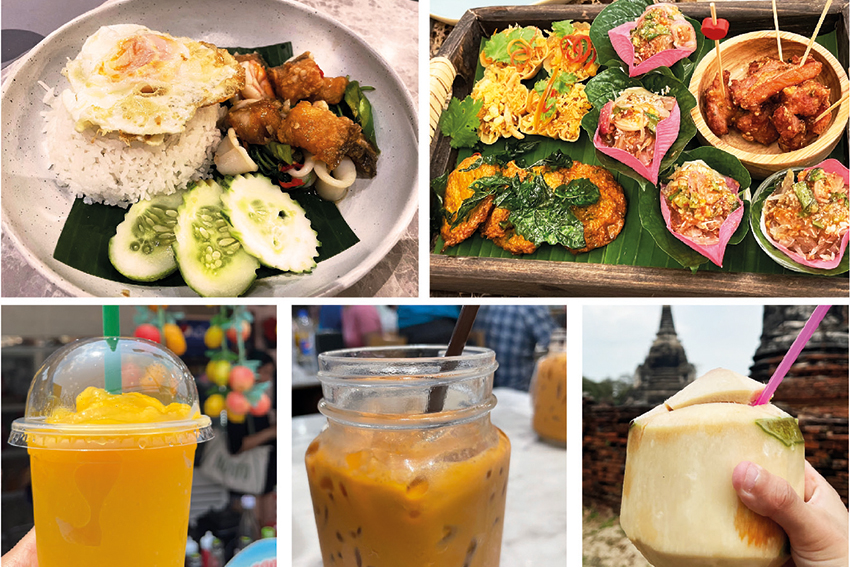
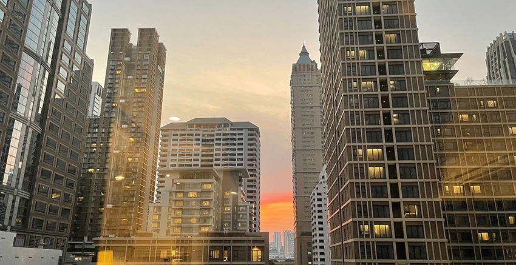

因疫情無法出國旅遊近三年時間，重啟國門後勢必得衝一波。但現階段各國機價還是偏貴，不過搭乘星宇來回泰國約落在台幣一萬初，是還可接受的價格（而且星宇長途飛機還提供無限量各種酒精飲料與特調，超讚），且泰國物價便宜，東南亞飯店CP值也很高，通常都有泳池與免費早餐，加上沒去過，最終選定曼谷作為旅行地。
| 住宿飯店有客廳、廚房、泳池、免費早餐等等(平均約1700晚/人)。 | |
|  |
曼谷旅遊區域大致分為，市中心、舊城區、恰圖恰區、昭披耶河區、其他市郊。下了飛機搭乘機場捷運來到市中心，立馬被曼谷繁忙混亂的交通給震攝，計程車、機車、嘟嘟車伴隨著喇叭聲來回交錯，以旅客來說，選擇交通工具時，曼谷的BTS與MRT其實就涵蓋了大部分景點，但如果有四人以上的話，選擇計程車再分攤車錢其實也不貴，但建議以Grab等APP來叫車，價錢比較公開透明，不會有被當地司機坑殺問題（尤其嘟嘟車司機都會喊出比較貴的價錢），而換匯可以在市中心的superrich會有比較好的匯率，一萬台幣比起機場或台灣，可以多換快1000泰銖，直接再多吃四餐呢！
| 搭計程車時行李塞不下後車廂，司機直接拿線捆綁固定。 | |
|  | |
| 嘟嘟車也是當地合法的運輸工具，但通常要跟司機直接喊價。 | |
|  |
最經典的舊城區想必是旅人的必訪之地，臥佛寺、大皇宮、鄭王廟等景點皆落於此地，我們選了鄭王廟作為旅程首站，位在昭披耶河西畔，是泰國境內規模最大的大乘舍利式塔，建築特殊且壯觀。此外強烈推薦租借門口處的傳統泰服，只需200泰銖就能在裡面走路有風（雖然錶定200泰銖只能租2小時，但其實店家根本沒在管 XD），拍起照來也有趣。
| 傳統泰服體驗，便宜好拍，但很熱。 | |
|  | |
| 鄭王廟景觀十分壯觀。 | |
|  |
鄭王廟結束後，可以花費約18泰銖，乘船回至昭披耶河東畔，可惜的是，同樣位在昭披耶河東畔的大皇宮及玉佛寺，因其開放時間只到15:30，我們來不及去看，臨時更改景點前往曼谷的唐人街，這個區域已有200多年的歷史，聚集許多中泰美食，隨處可見藥材店與超大間的金鋪，偶爾也會看到在賣炸昆蟲的小攤販，整體是很多元的地方。 但雖在唐人街，但中文字的使用並不多，大部分招牌還是以泰文為主，探究其原因，原來是泰國華裔與泰國當地融合的太好了，泰國政府是少數沒有排華的國家，反而使用政策給予入籍華裔與泰籍同等權利，加上二戰後的泛泰主義，有一段時間泰國禁止教學中文，反而學習泰文有利自己的社會地位，因此泰國華裔的後代在中文上才有了斷層。
| 泰國中國城街景。 | |
|  |
如果看膩城市的高樓大廈，泰國郊區也有許多地方可以旅遊，例如水上市場、動物園、水上活動盛行的芭達雅等等。但如果對古蹟與文化頗感興趣，曼谷北方的阿瑜陀耶(Ayutthaya，或稱大城遺址)，絕對不會讓你失望，想省錢的話可以花不到50泰銖搭乘無冷氣火車（但比較耗時），人多的話建議包一台車過去，雖然貴一點，但省時又有冷氣。大城遺址在14至18世紀時極為繁榮，周圍三條河流幫助它成為全球外交與商業的中心，其建築也融合了各國風格，它同時也是當時人民的宗教中心，因此可以見到與多佛像與寺廟的遺址。
| 阿瑜陀耶古城被列為世界文化遺產。 | |
|  |
可惜的是，暹緬戰爭爆發後，緬甸軍隊為徹底擊潰泰國人的信仰，焚燒寺廟和王宮，並刻意把佛像的頭砍下帶走，帶不走的就隨地丟棄，景點之一的樹中佛，就是當時的佛首與樹根盤旋共生，真的很奇妙呢！（不過大城有些景點距離蠻遠的，建議可以包個嘟嘟車，先跟司機談好要先哪些點，以及包車一天的價格，會比較方便！）
| 左：遺跡內處處都可看到被砍下佛首的佛像，右：與樹根盤旋而生的樹中佛。 | |
|  |
除了景點之外，美食也是許多人探訪當地的理由之一，泰國的食物真的CP值很高，通常在餐廳吃完一頓飯平均一人只要約200泰銖，酸辣、咖哩香料、打拋以及各種各樣涼拌生菜可以選擇，口味上並不會不能適應，只是比較偏辣，喜歡吃辣的人會很愛。自己反而常常是因為天氣太熱食不下飯，但通常路上也有很多冰涼的奶昔、泰奶或是椰子水可以喝，可以靠著飲料的力量來消除暑熱。
| 於泰國品嚐的各式食物與飲品 | |
|  |
整體來說泰國真的是樣貌很不一樣，很有趣的國家，不同於我們已經熟悉的日本、韓國樣貌。它擁有許多非常不同的古蹟建築與文化，如果熱愛購物與夜生活，酒吧、商場也林立於曼谷中心，作為東南亞的經貿中心，相信會愈來愈強大，期待未來再次造訪泰國。
| 首都曼谷的城市風景。 | |
|  |